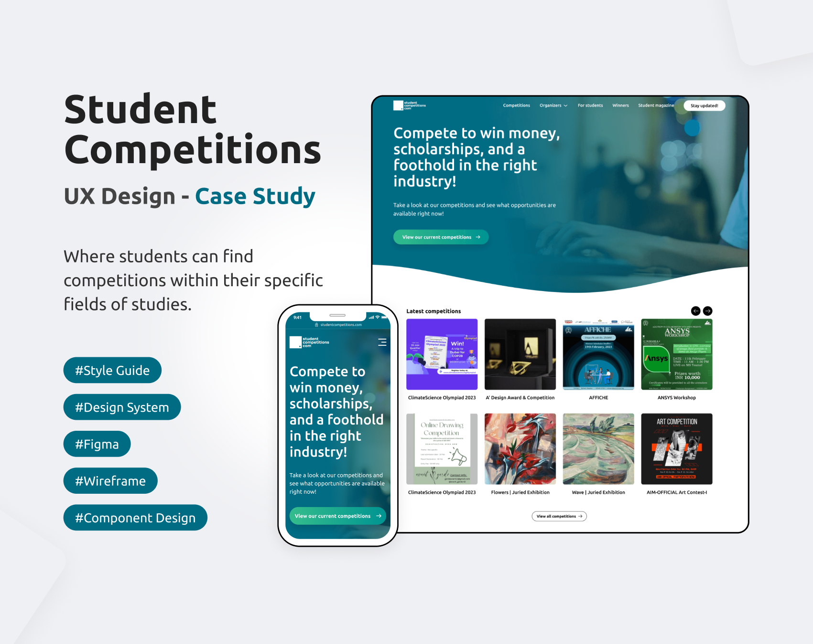
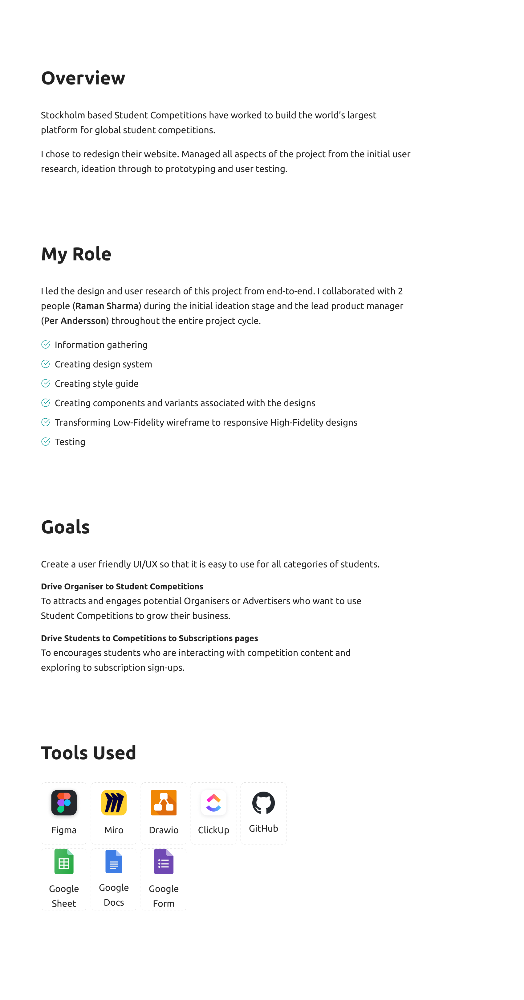
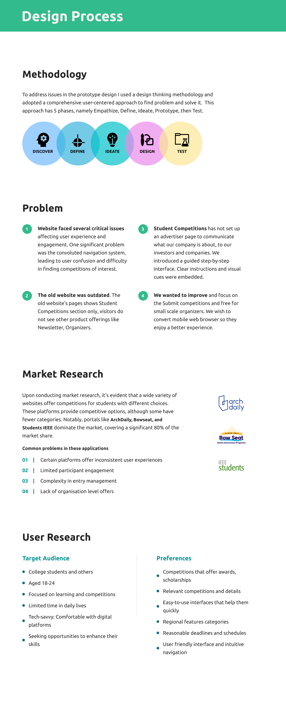
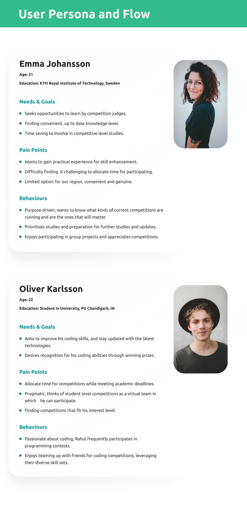
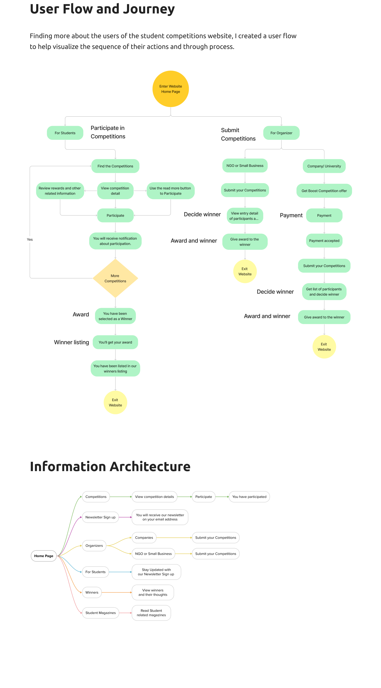
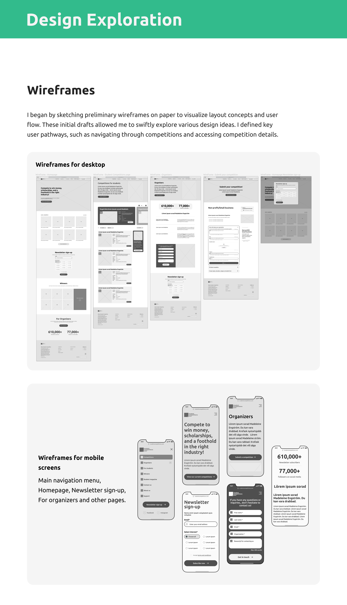
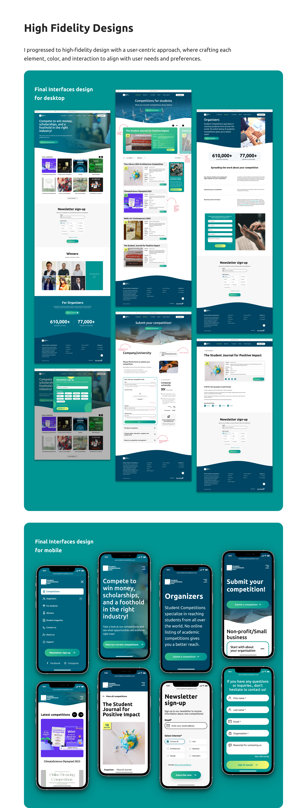
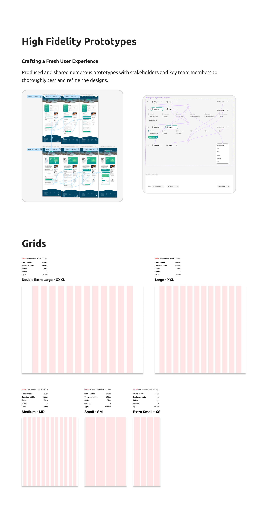
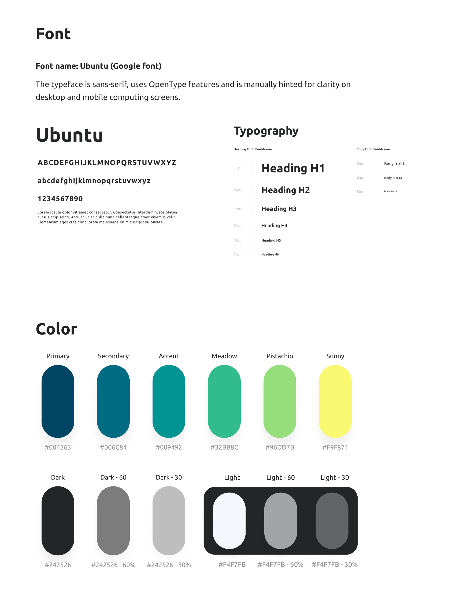
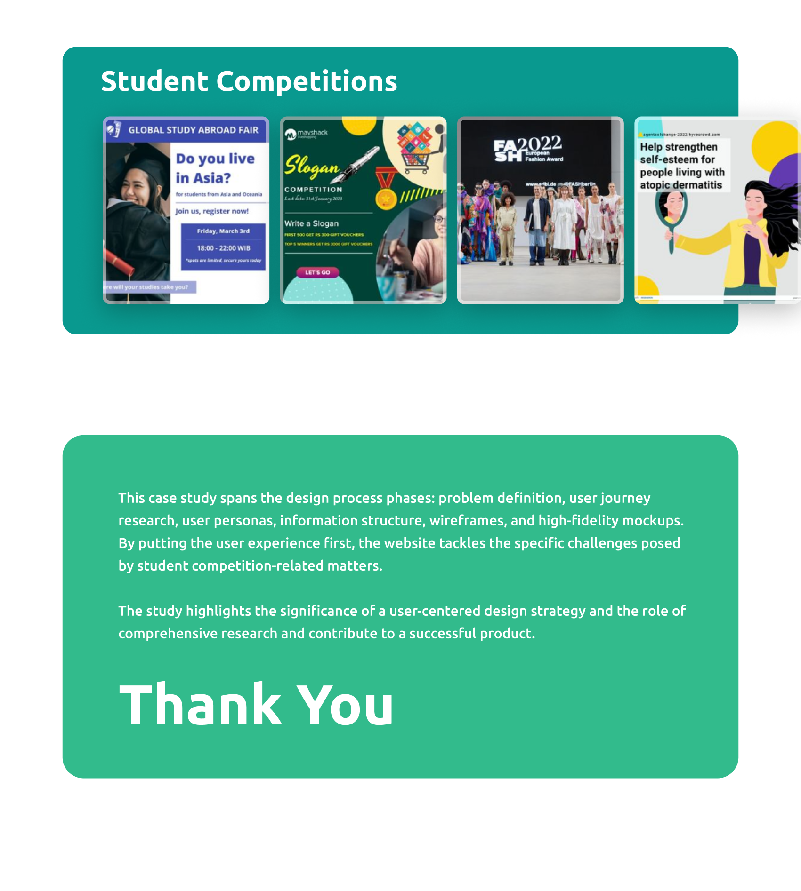

Case Study
I have created case study design for various projects and domain such as Student Competitions, Mavshack Mobile Live Shopping, MMLS App and TrikeNow Mobile App and many more.
Project
Student Competitions
Here I've created created case study design following all the design process from start to completion.









